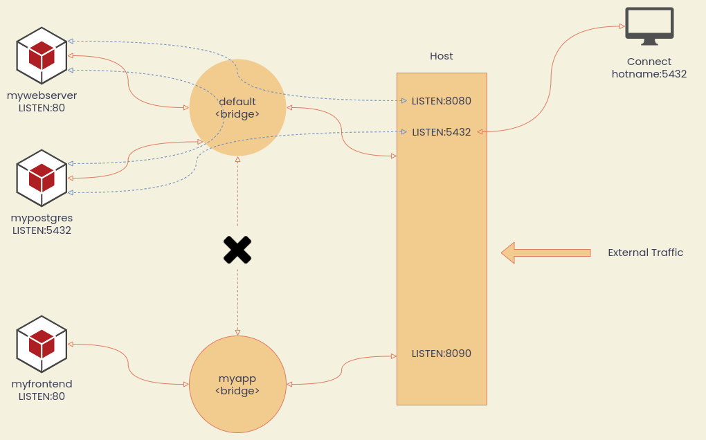

Networks
Network คือ ระบบสื่อสารของ Container ถ้าไม่ได้ระบุ Docker Engine จะให้ Container อยู่ที่ Default Bridge Network โดยอัตโนมัติ คำสั่งที่ใช้บริหารจัดการคือ network เช่น
โดยปกติเรามักจะจับกลุ่มให้ Application เดียวกันอยู่ภายใต้ Network เดียวกัน
Concept

List Networks
Check Containers in Networks
ดูที่ Section Containers จะเห็นว่า Container ไหนอยู่ใน Network ใด
Create a Network
- Default Network Driver จะเป็น Bridge ในอนาคตเราจะมีการใช้งาน Docker Swarm ซึ่งใช้ Overlay Network
- Network ที่สร้างขึ้นมาเองจะมี DNS Resolver ให้อัตโนมัติ หมายความว่าสามารถใช้ชื่อ Container แทน IP Address ได้เลย (Default Network ไม่มี DNS Resolver ให้)
Example 1 - Database Dev
สมมติว่าต้องการสร้าง Development Environment สำหรับทดลองใช้งาน Database
- มีหน้าเว็บ UI
- มีฐานข้อมูล PostgreSQL
Create a Database Network
เริ่มด้วยการสร้าง Network
Run a Web UI within Network
รัน Cloudbeaver UI (ตัวบริหารจัดการ Database บน Web) ด้วย --network
docker run \
--name cloudbeaver \
-d -it -p 8090:8978 \
--network db-dev \
dbeaver/cloudbeaver:latest
Run a PostgreSQL within Network
เหมือนด้านบน
docker container run \
--name mypostgres \
-d -p 5432:5432 \
-e POSTGRES_PASSWORD=secretpassword \
-v postgresdb:/var/lib/postgresql/data \
--network db-dev \
postgres
Check
ตรวจสอบโดยการเข้าเว็บ http://localhost:8090 โดยเวลาระบุ hostname ให้ระบุชื่อ Container mypostgres ได้เลยเนื่องจาก Docker Engine จะทำการแปล mypostgres เป็น IP Address ให้อัตโนมัติ
Example 2 - DNS Round Robin
สมมติว่ามี Server Elasticsearch อยู่ 2 ตัว ต้องการทำ Load Balancer อย่างง่ายให้ Traffic ไปหา Server ทั้งคู่พอๆกัน ทำแบบหยาบๆสามารถใช้ --net-alias ของ Docker ได้ดังนี้
Create a DNS Network
Add Containers
ใส่คำสั่ง สองครั้ง เพื่อสร้าง 2 Containers
--net-alias คือการบอกว่าให้ Map ชื่อ Container นี้กับชื่อที่ระบุใน --net-alias ในกรณีนี้คือ search-cluster เวลามีการเรียกใช้ search-cluster Docker จะ Forward Traffic ไปหา Server ทั้งสองตัวแบบสุ่ม
Test DNS
ใช้วิธี Attach Alpine Linux เข้าไปที่ Network elastic-lb แล้วก็รันคำสั่ง nslookup search-cluster ในการตรวจสอบหมายเลข IP Address ที่ผูกอยู่กับชื่อ search-cluster
Call Elastic API
ใช้วิธี Attach CentOS Linux เข้าไปที่ Network elastic-lb แล้วทดสอบการเรียกข้อมูลจาก Elasticsearch ด้วย curl (สาเหตุที่ใช้ CentOS เพราะว่ามี curl ติดตั้งมาแล้วพร้อมใช้ แต่ Alpine ไม่มี) ให้ทดสอบรันคำสั่งหลายๆครั้งเพื่อให้แน่ใจว่า Response มาจาก Server คนละตัว โดยสังเกตที่ name
Example 3 - Wordpress
ส่วนประกอบของ Wordpress คือ โปรแกรม Worpress ที่รันอยู่บน Webserver และ PHP กับ Database MySQL ขั้นตอนในการ Deploy คือ
- สร้าง Network สำหรับ App Wordpress
- Deploy
mysql+ ตั้งค่า Volume - Deploy
wordpress+ ตั้งค่า Volume
โดยปกติกรณีแบบนี้เราจะใช้ Docker Compose (อาทิตย์หน้า) ซึ่งจะบริหารจัดการง่ายกว่า แต่อันนี้เป็นตัวอย่างแบบไม่ใช้ Compose
Create a Wordpress Network
Deploy MySQL
เริ่มจากการ Deploy Database MySQL ก่อนด้วยคำสั่ง
docker container run \
-d --name wordpress-db \
-e MYSQL_DATABASE=mywebsite-db \
-e MYSQL_USER=admin \
-e MYSQL_PASSWORD=wordpresspassword \
-e MYSQL_ROOT_PASSWORD=rootpassword \
-v wordpress-db:/var/lib/mysql \
--network wordpress-net \
mysql
Deploy Wordpress
docker container run \
-d -p 8099:80 \
--name wordpress-site \
-e WORDPRESS_DB_HOST=wordpress-db \
-e WORDPRESS_DB_USER=admin \
-e WORDPRESS_DB_PASSWORD=wordpresspassword \
-e WORDPRESS_DB_NAME=mywebsite-db \
-v wordpress:/var/www/html \
--network wordpress-net \
wordpress
Test Wordpress
- เปิดเว็บที่ http://localhost:8099
- ทำการ Setup ตามหน้าต่าง Wizard จนใช้งานได้
- ทดลองเขียน Post + เปลี่ยน Theme